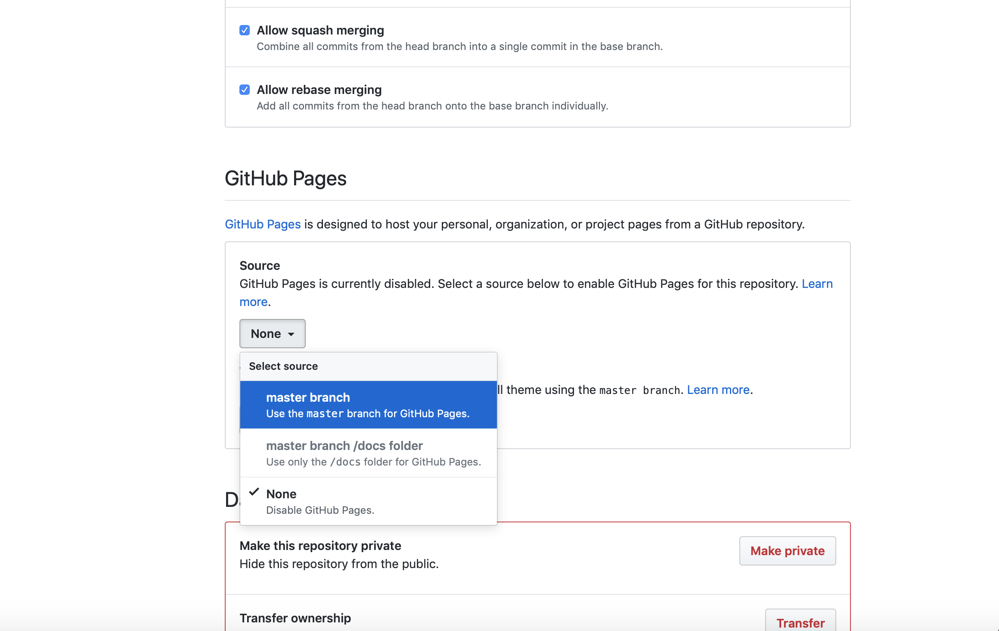

go to the plus sign at the top of the page and click New Repository.
When the Creating New Repository page opened, go ahead and type the repository's name.
as soon as you typed your new repository name go ahead and click "Initialize this repository with a README" , then "click Create repository".
as soon as the new repository created click on Settings at the top of the page.

in the settings page, scroll down to GitHub Pages, click on master branch under "Source"
once you clicking on the masrter branch your site will creating it may take time.
in your repository page drag all your sources files. when the download is complete click "Commite Changes"